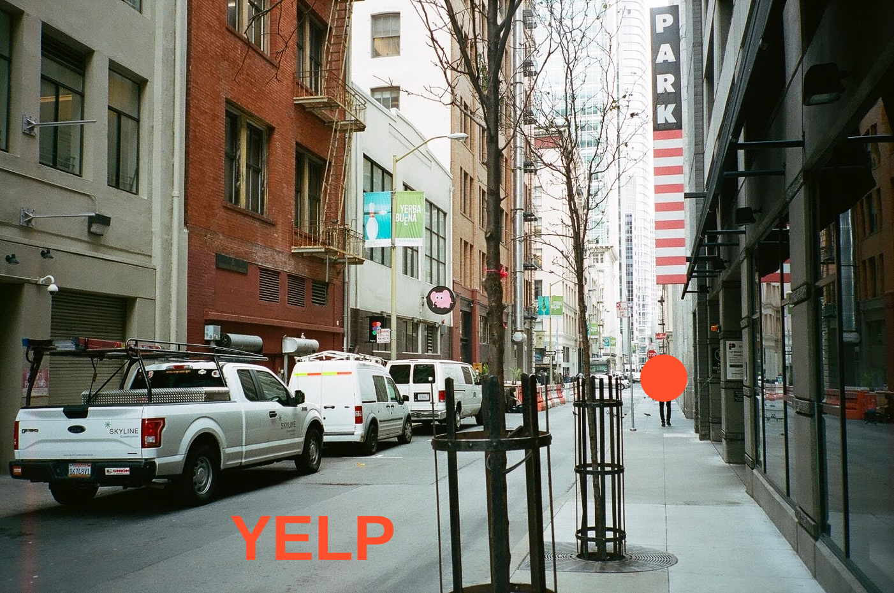

fall 17 - winter 18, san francisco

I was a product design intern at Yelp for 8 months on the Reader Experience (ReaderX) team.
I mainly worked on business page improvements and redesigning our photo browsing experience on mobile and web (will not be shown) platforms.
context
The ReaderX team is in charge of making sure that the various parts on a business page (which are designed and built by other teams) are cohesive to allow readers to make decisions and complete tasks efficiently. I worked with another designer, two PMs, and with two developers.
photos as a decision-making tool
From user research, we found that users decided to transact with a business heavily based on the business' photos. Transactions can range from partaking in services such as creating a reservation, food delivery, joining a waitlist, requesting a quote, or booking an appointment.
The different transaction types that can be done via the business page—sometimes there can be up to three in a page! Just imagine all the PMs fighting for space above the fold...
problem
A Yelp business page has various entry points for viewing photos, and these entry points are difficult to discover, navigate, and look and behave inconsistently.
"The aim is to design a seamless photo browsing experience from all entry points on the business page."
What it feels like to find the Yelp photo grid, especially when the only entry points are 1) an easily missed and 2) a very tiny, CTA
anatomy
There are three entry points for photos,
- Top Business Header is the first and largest entry point for photos (but not necessarily the most obvious one).
- Media Swipe Bar is a redundant section of photos within the business page, but is the main way to get to the photo grid with its "See All" CTA.
- Attached Thumbnails are the photos attached to reviews.
The 3 entry points for photos on a business page: I. Top Business Header, II. Media Swipe Bar, III. Attached Thumbnails
Moreover, clicking or tapping photo thumbnails from the entry points always goes into low-level browsing, such as going into a photo lightbox. A photo light box contains a lot of unnecessary details when browsing for photos.
The user is then also forced to swipe through the photos one by one, instead of being able to scroll through a page with multiple photos. Within the lightbox, the user also has no access to filter the photos by category, using the photo classes, as shown on the photo grid.
Photo lightbox vs. Photo grid
design
Reviewing the issues shown in prod by winter 2018, there was a
- Lack of saliency of the Top Business Header interactions. It's not obvious enough that one can tap or swipe the Top Business Header.
- Focus on immediate deep browsing vs. prioritizing skimming. Every photo thumbnail tapped leads to a photo lightbox. The photo grid is only accessible by tapping on "See All", at the Media Swipe Bar, which is found below the fold.
"We can increase the efficiency of photo browsing by immediately directing the user to a richer photo grid."
Making the photo browsing experience efficient through easy access of photos, categories, and captions
Solution
Before starting on any design work, I audited and took inspiration from other apps that showcased photos for a particular business or listing. This included Airbnb, OpenTable, Google Maps, and TripAdvisor. For example, autoscrolling was an animation inspired by Airbnb, and rejigging the grid to keeping photo aspect ratios was inspired by Google Maps.
In short, the solution entatiled 3 design changes:
- Autoscrolling Top Business Header photos, affording the user to tap or swipe to see more content. This will allow users to quickly find all photos of a business.
- Any photo thumbnail taps directly to the photo grid first, instead of the photo light box—while still providing context where the tapped photo fits in the photo grid.
- Replacing the 3 column square grid into a grid that keeps the aspect ratio of the photos, and making them larger to add caption previews.
I. Autoscrolling at the header
At the first glance, the Top Business Header photo doesn't look swipeable, or even a way to access the grid. In fact, in order to access the grid you must tap on the small, low-opacity pill that shows the index number of the photo you are looking at.
By autoscrolling these header photos, the user's attention is quickly captured, while emulating a swiping motion. The CTA was also changed to "See All #_of_photos" (vs. "1 of #_of_photos"), was made bigger, and more opaque.
Top Business Header autoscrolling animation (L: old prototype, R: prod design)
II. Focus on Photo Grid
As mentioned, any photo thumbnail tapped will direct the user to the photo grid. The photo grid includes photo classes, such as "Food", "Menu", and "Outside". The design elegantly handles this change of context by animating the header photo into a full-width photo on to the grid, and scrolling to its position on the grid. The rest of the photos around it are sized according to their aspect ratios, and preferably, quality scores.


Tapping the Top Business Header photo and seeing it on the photo grid
III. bigger photos and captions
To achieve a richer photo grid experience, I proposed imposing menu items on the photos. From user research, we found that most users choose what to order (whether in the restaurant or for delivery) based on photos.* Therefore, showing the menu item associated with the photo would be very helpful.

L: Initial design of photo grid with menu item tags, and ads. R: Prod design using photo captions
*This inspired a feature that was built in parallel called Popular Dishes, which showcase a food business' popular menu items mentioned based on photo captions.
results
Overall, redirecting to the grid and having a clearer CTA for seeing all photos on the Top Business Header increased photo views.
The autoscrolling feature absorbed another "slideshow feature," which was part of an incentive for business owners to upgrade plans. On September 2018, Yelp released a blog post about this paid feature, showcasing my original designs.
"People who view business pages with the feature see up to 30% more photos and engage with the business page more often."
The grid improvements on the other hand were compromised for cheaper engineering, making the photos available only in two sizes—a square that takes up half the screen or a full-width rectangle. Mentioning or tagging menu items on the photos themselves were not implemented yet, but captions were.
Despite these two tradeoffs to implement the design in 2-3 weeks with two developers, the essence of what makes browsing photos much more efficient— prioritizing skimming and showing just the right amoount of information at-a-glance—were achieved.
other
I designed a lot of other future concepts for the photo browsing experience, and the Yelp business page overall. Here are some concepts I prototyped and inspired some of the new features Yelp has been rolling out.
media swipe bar improvements
The Media Swipe Bar is a feature within the business page where most users accessed photos (before my redesign). To reduce redundancy with the Top Business Header, I leveraged this section as a way to enter the photo grid's photo classes. Photo classes are only discoverable on the grid—but with the repurposed Media Swipe Bar, users can discover that they can filter photos on Yelp as well.

Concept design for Media Swipe Bar (in a reimagined Yelp iOS Styleguide, not by Yelp)
Business page improvements
I introduced a lot of other improvements on the business page as well, such as information hierarchy, contribution or review entry points, and drastic iOS and Android styleguide changes, to name a few.
Below was a fun exercise I did trying to revamp the Yelp business page from scratch, including all the required components a business page must have (shaking my fist at you, ads).

Concept design for Yelp business page (in a reimagined Yelp iOS Styleguide, not by Yelp)
thanks to
Simon Smith my manager, for taking Yelp's design team by a storm, giver of waffles, and showing me the best Filipino takeout near work! My product managers, Lindsay Goyne, Marshall Yuan, Matt Geddie, and Young Yuk for giving me my first experience on working with PMs.
The Yelp product design team, for their enthusiasm, entertaining both my design (and fashion) critiques, and having my back at the The Café.
And especially to Sijia Wang, my mentor, and John Salaveria, my co-intern—for always believing in me, and taking me out of my Mission home from time to time.
| write | joannemagbitang@gmail.com |
| connect | in/joanne-magbitang |
| listen | spotify/saintpotter |